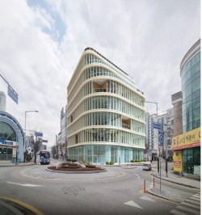

편안하게 웃을 수 있도록,
서울미소치과가 함께합니다
처음 오시는 분도 진료시간과 위치를 보고 바로 예약하실 수 있습니다.
진료시간
월·화·목·금 09:30~18:30 · 수 09:30~20:30 · 토 09:30~14:30
점심시간 13:30~14:30
전화 예약
010-9275-0410
위치
강원도 원주시 나비허리길 49, 4층

병원 소개
서울미소치과는 원주에서 수면진정 치과 진료와 잇몸 관리를 함께 하는 치과입니다. 치과가 무서워 오랫동안 치료를 미뤄 오셨다면, 수면진정으로 긴장을 줄이고 편안하게 치료받으실 수 있습니다. 치료가 끝난 뒤에는 EMS의 GBT 프로그램으로 잇몸과 치아를 꾸준히 관리해 드립니다. 임플란트, 치주치료, 라미네이트 등 필요한 치료를 차근차근 설명드리고, 환자분의 구강 건강을 지키는 주치의가 되겠습니다.
원장 소개
- 서울대학교 치의학대학원 졸업
장비
- 프라임 스캐너
병원 사진 자리
진료 안내
환자분의 상태에 맞춘 진료를 안내드립니다.
임플란트 · 수면진료
상실된 치아를 자연치아에 가깝게 되돌리는 치료입니다. 긴장되는 분은 수면진정 진료로 편안하게 받으실 수 있습니다.
GBT 치주치료
EMS의 GBT 프로그램으로 잇몸과 치아를 꾸준히 관리해 드립니다.
심미 · 라미네이트
자연스럽고 아름다운 미소를 위한 심미 치료와 라미네이트를 안내드립니다.
일반 진료
충치·잇몸 질환 등 일상적인 치아 건강을 살펴봅니다.
오시는 길
주소
강원도 원주시 나비허리길 49, 4층
교통
교통 안내는 원장님과 확인 후 채워 주세요
주차
건물 주차 가능 · 주차가 어려울 때는 나이스주차장을 이용해 주세요
강원도 원주시 나비허리길 49, 4층
구글 지도에서 길찾기